Rapport de Thèse Professionnelle
Transaction Processing
with
Java and Corba
Denis ARNAUD
Institut Eurécom
Juin 1998
Table of Contents
1. Abstract
1.1. Résumé
2. Introduction
3. Paradigm evolutions
3.1. The three waves
3.1.1. First Wave: Monolithic Applications (50s - 70s)
3.1.2. Second Wave: Client/Server Applications (80s - 90s)
3.1.3. Third Wave: Multi-Tier Distributed Applications (mid-to-late 90s)
3.2. Architectural Underpinnings
4. Corba
4.1. What is Corba?
4.2. Distributed objects, Corba-style
4.2.1. What is a distributed Corba Object
4.2.2. Everything is in IDL
4.2.3. Corba Components: From System Objects to Business Objects
4.3. OMG’s Object Management Architecture
4.3.1. The Object Request Broker (ORB)
4.3.2. The Anatomy of a Corba 2.0 ORB
4.4. Corba 2.0: The Intergalactic ORB
4.4.1. CORBAservices
4.4.2. CORBAfacilities
4.5. Corba 3.0: The next generation
4.6. Corba and its competitors
4.6.1. Sockets
4.6.2. HTTP and CGI
4.6.3. Servlets
4.6.4. RMI
4.6.5. DCOM
4.6.6. DCE/RPC
4.7. Corba meets Java
5. The Corba Object Transaction Service
5.1. Transactions
5.1.1. Distributed Transactions
5.1.2. The OTS: DTP with distributed objects
5.2. OTS walk through
5.3. Transaction Life-cycle
5.3.1. OTS interface summary
5.3.2. Transaction Creation
5.3.3. Transaction Propagation
5.3.4. Resource Registration and XA interoperability
5.3.5. Transaction Termination
5.3.6. The two OTS philosophies
5.4. Recovery mechanisms
5.5. OTS interoperability
6. Legacy systems access
6.1. Databases
6.1.1. Database Integration with OTS
6.2. The need for a transaction processing solution
6.3. TP Monitors
6.3.1. What is a TP Monitor
6.3.2. TP Monitors and OSs: The Great Funneling Act
6.3.3. How is the Great Funneling Act Performed?
6.3.4. TP Monitors and Transaction Management
6.4. Managing Distributed Transactions Today
6.4.1. The TP Monitor Approach
6.4.2. ORBs Interfacing to a TP Monitor
6.4.3. Fully Integrated Corba Solution
7. An actual project
7.1. Introduction
7.2. Business Application
7.2.1. Presentation
7.2.2. Detail
7.3. Benchmark
7.3.1. Presentation
7.3.2. Detail
8. Conclusion
9. Bibliography
Enterprise Information Technology (IT) professionals have reached the practical limits of two-tier architectures. Facing growing pressure to deliver broad-reaching application functionality quickly and cost-effectively, IT departments are turning to distributed object computing as the adaptive software architecture on which to build applications that meet these challenging business requirements. Besides, as a growing number of sophisticated services are provided over the Internet, the need arises to coordinate application objects into transactions, in such a way as to enable functionality and data to be shared across applications and over multiple platforms. The Corba Object Transaction Service (Corba OTS) allows precisely all this, i.e. provides transactional integrity enabling mission-critical use of distributed applications, embodied by either new technology or existing systems.
Les professionnels du secteur des technologies de l’information ont atteint la limite de ce que pouvaient offrir les architectures deux tiers. Face à une demande grandissante de livrer rapidement et à moindres frais des fonctionnalités logicielles de plus en plus étendues, les départements informatiques se tournent vers les objets distribués pour y trouver une architecture souple sur laquelle bâtir les applications répondant à ces besoins industriels. D’autre part, un nombre grandissant de services sophistiqués apparaissant sur Internet, il devient nécessaire de coordonner les objets applicatifs au sein de transactions, de manière à permettre le partage des fonctionnalités et des données entre les différentes applications et plates-formes. Le service transactionnel Corba (Corba OTS) apporte justement tout cela, autrement dit il fournit l’intégrité transactionnelle permettant l’utilisation d’applications distribuées critiques, que ces dernières se matérialisent par des systèmes existants ou des technologies plus récentes.
The explosion of the Internet has fueled the shift to distributed objects. Internet business opportunities require a new breed of Information Technology (IT) solutions that are suited to this new, rapidly expanding forum. A rapidly growing number of organizations are deploying Internet-based services that require an initial, modest IT investment, yet enable the organization to recover that investment nearly overnight with the low-overhead, high-volume sales that they can generate. The prolific development of these Internet-based applications reinforces the need for a standards-based distributed-object architecture, which enables functionality and data to be shared across applications and over multiple platforms.
The combination of the Java language, Corba middleware and Object Transaction Service (OTS) provides such an architecture, and is worth studying. Also, the task I was assigned these past six months was to study and understand these new trends in technology, in order to validate their use in future projects Sema Group Telecom will be involved in. Therefore, during my training period, I produced such outputs as a white paper on these new technologies, and a technical conference to show the company’s employees how we can use Java, Corba and the transactions in our daily development works.
Besides, I was involved in the beta test program of a new product, namely the Inprise’s (ex-Borland/Visigenic) VisiBroker Integrated Transaction Service (ITS), which integrates an Object Request Broker (ORB) with several Corba services, including the OTS. Thus, I set up a test platform (that I named Cotransit) which performs transactions on distributed databases and objects from a Web front-end.
During my training period I had to understand new technologies as well as where they are going to lead us in a near future. Therefore, I would like this report be a presentation of what I have worked on daily during these past six months, in order to make you grasp the current technological trends in the software industry, as well as understand the Cotransit test platform based on these technologies.
As an introduction, I will try to show you how we get where we are today, then we will see some basic concepts in order to better understand what comes next, namely Corba and the Object Transaction Service. Eventually, we will see how we can integrate legacy applications with these new technologies, and just to show that all this does not sum up to empty words, I will present the Cotransit beta test platform.
Like most fields of human endeavor, the Information Technology industry has evolved through periodic " paradigm shifts "—fundamental transformations of how developers and users build, access, and interact with computing systems and applications. These technology waves tend to take from 10 to 15 years or longer to progress from early experimentation in computer research laboratories to wide-spread usage in industry. Given that the computer industry is only about 45 years old, this means that many technology areas are now in their third wave of evolution.
Table 1 lists a few of the paradigm shifts that we have lived through in Information Technology, and what is on the horizon. Note that in some cases, a new paradigm augments, but does not replace, an existing paradigm (mainframes are still around in the era of PCs). In other cases (vacuum tubes, punched cards), the new paradigm effectively replaces the old paradigm. The focus of this chapter is the paradigm shift to the third wave of Enterprise Application Software Development that is just reaching the inflection point after the typical 10-15 years of technology investment.
Table 1: Computer Industry Evolution
|
Technology |
First Wave |
Second Wave |
Third Wave |
Fourth Wave? |
|
Computer Systems |
Mainframe systems (50s-60s) |
Mini computers (Morphed into servers) (70s-80s) |
Personal computers (80s-90s) |
" Intimate/wareable " Computers? (00s) |
|
Components |
Vacuum tubes (50s) |
Discrete transitions (60s-70s) |
Integrated circuits (80s-90s) |
Quantum electronics (10s) |
|
User Interface |
Punched cards (50s-60s) |
" Green screen " character-based interfaces (70s-80s) |
Graphical User Interfaces (GUI) (80s-90s) |
" Natural " (language, vision) interfaces? (00s) |
|
Digital Communications |
" Sneaker net " (50s-60s) |
Local Area Network (LAN) (70s-80s) |
Internet/WWW (90s) |
Global information infrastructure? (00s) |
From the inception of the computer industry in the 50s, through the end of the 70s, virtually all enterprise software applications were monolithic, with tightly intertwined program and data. Indeed, each of these systems contained all of its own presentation, business, and data access logic. They could not share data with other systems, and so each had to store a private copy of its data. Because different systems needed access to the same data, organizations had to store redundant copies on multiple systems. Also, each application developer had to choose how to structure and store data, often using clever techniques to minimize (expensive) storage (hence, the dreaded " Year 2000 " problem). This tight integration between program and data made it very difficult to model and reuse corporate information.
With the commercial viability of Database Management Systems (DBMS) in the early 80s, enterprises began to model their corporate information and create enterprise data repositories that were accessible by multiple programs. This separation of program and data caused a fundamental shift in how companies ran their business, as for the first time so-called " Management Information Systems " departments were created to model corporate data and provide multiple applications that manipulated common information.
Made possible by a convergence of technologies—networks, low-cost PCs, user interfaces, and relational databases—client/server computing promised to simplify the development and maintenance of complex applications by separating centralized, monolithic systems into components that could be more easily developed and maintained. This model worked fairly well when the user interfaces to corporate data were provided by simple character-based interfaces, accessible by a small number of " data processing " employees.
Actually, applications were partitioned into client components, which implemented the application’s presentation logic and contained much of the business logic, and server components contained business logic in the form of stored procedures. Data access logic was handled either by the client or the server, depending on the implementation strategy. In the end, many client/server solutions simply created two monolithic systems where there once had been one. Thus, it remained difficult to build, maintain, and extend mission-critical client/server applications.
Besides, the widespread adoption of graphical user interfaces in the 90s, and the extension of real-time information access to millions of desktops, led to a dramatic increase in the size and complexity of client applications—increasingly " fat " clients running on thousands of PCs, all trying to access a central data repository. And, from the development perspective, while there was enterprise data reuse, there was little reuse of encapsulated business logic.
Throughout this period, development teams had to create the same functionality over and over again. Reusing code was difficult. Usually it meant copying a segment of code, modifying it, and then deploying the modified copy. Over time, a proliferation of similar modules had to be updated and maintained separately. A change to one module had to be propagated to similar modules throughout the enterprise. Because this often proved unmanageable, functional inconsistencies crept into enterprise information systems.
Distributed object technology fundamentally changes all this: during the 80s there was a great deal of experimentation in the computer research community on distributed computing—writing applications that did not just access remote data on a DBMS server, but rather distributed various pieces of the application itself across multiple systems. This research led to the development of distributed computing standards such as the Distributed Computing Environment (DCE) from the Open Software Foundation (OSF) and Open Group, and the Common Object Request Broker Architecture (Corba) from the Object Management Group (OMG).
During the 90s, companies began the process of building and deploying so-called " multi-tier " distributed applications using such frameworks, with a thin GUI (Graphical User Interface) client talking to a middle-tier application server running centralized business logic, itself talking to a traditional DBMS server. Coupled with a powerful communications infrastructure, distributed objects divide today’s still monolithic client/server applications into self-managing components, or objects, that can interoperate across disparate networks and operating systems. This general architecture is now establishing itself as the dominant enterprise application software architecture for the late 90s and early 21st century.
The component-based, distributed-object computing model enables IT organizations to build an infrastructure that is adaptive to ongoing change and responsive to market opportunities. However, it also brings new requirements. To operate in today’s heterogeneous computing environments, distributed business applications must work on a variety of hardware and software platforms. They must integrate old technology with new and make use of existing infrastructure. Furthermore, suitability for enterprise-class applications calls for capabilities beyond conventional Web-based computing—scalability, high availability, ease of administration, high performance and data integrity.
Besides, there has been a dramatic change in the network industry: transcending its roots in government agencies and educational institutions, the Internet has become the most significant new medium for communication between and among businesses, educational and government organizations, and individuals. Growth of the Internet and enterprise intranets will continue at a rapid pace through at least the end of the century, leading to global interconnectedness on a scale unprecedented in the history of computing.
The concurrent revolutions in Internet and distributed object computing are on converging paths. As a communications framework, the Internet provides an ideal platform for distributed object applications and therefore fosters their growth. At the same time, distributed object technology is improving the quality of Web-based applications, adding value to the Internet and enterprise intranets.
So, given this paradigm shift from client/server applications to multi-tier distributed applications, what are the technological and architectural underpinnings required to build, deploy, and manage third-wave enterprise applications? In the early 90s, early adopters of distributed computing turned to Unix, DCE and proprietary communication protocols.
In 1989, the Object Management Group was formed to build on the DCE foundation to add support for distributed objects in a distributed computing framework. Corba is now taking hold as a distributed object computing infrastructure in hundreds of enterprises around the world. Why Corba, and why now? As seen above, object-oriented programming emerged as the preferred way to build software applications during the 90s. Languages and environments such as Smalltalk, C++, Delphi, and, recently, Java have become the norm for constructing large, complex applications because of the inherent advantages of object encapsulation and component reuse. But this paradigm shift in programming technology has mostly impacted " programming in the small "—individual programmers dragging objects/components off a palette to construct GUI applications. Object-oriented technology is only now beginning to have an impact on enterprise-wide reuse of encapsulated business logic in the form of distributed objects.
There are three basic architectures being developed for enterprise-wide object reuse: DCOM/COM from Microsoft, Enterprise JavaBeans/RMI from Sun Microsystems, and Corba from OMG. Because of the pervasiveness of Windows and NT, DCOM will be an important foundation for departmental-level distributed applications that run in a Windows-only environment. However, the enterprise is a heterogeneous place, with NT, Unix, AS/400, MVS, VMS, Macintosh, NCs, etc. A proprietary distributed object computing infrastructure is not acceptable to enterprise customers.
Java, RMI, and the new Enterprise JavaBeans specification offer strong support for the heterogeneous enterprise, and are gaining a number of enterprise converts. However, the software field has always been multi-lingual—Fortran, Cobol, C, C++, Basic, Delphi, Perl, various Database 4GL’s, etc.—and few enterprise customers have the luxury of building their entire distributed enterprise architecture on a single language. What is needed is an open architecture that supports multiple platforms and multiple languages. This is why there are now over 850 members of the Object Management Group dedicated to the continued advancement of Corba as an open industry standard for distributed object computing. And, indeed, Sun works closely with the OMG in order to build the Enterprise JavaBeans/RMI on Corba.
As the Corba specification was being developed and finalized, the Internet and the World Wide Web began the phenomenally rapid expansion that continues unabated to this day. Several Internet-related developments are particularly significant for enterprise IT and are playing a key role in enabling IT organizations to benefit from distributed-object technologies:
In the Internet age, it is no longer possible to think of creating homogeneous computing environments. Enterprise information systems must be able to communicate and interoperate with applications and systems outside the firewall. In this way, enterprise IT can leverage the Internet by using it as a de facto WAN (Wide Area Network) that links government agencies, businesses, educational institutions, and individuals worldwide.
This symbiotic relationship is creating a paradigm shift in the way we conceptualize, design, develop, deploy, and maintain business applications. In the age of the Internet, a new kind of application will predominate—an application built from new and legacy code encapsulated in software objects, running on systems both inside and outside the firewall, and interacting with each other through an Object Request Broker using defined interfaces.
While large-scale paradigm shifts take years to develop, when they hit the inflection point, they have a profound impact on how we do business. The transition to multi-tier application servers based on distributed object computing and Internet/Intranet should prove to be such a transformation.
While object-oriented technology has existed for many years, it still has yet to gain wide acceptance in many areas of the software industry. In particular, the application of object-oriented technology to distributed systems is a relatively new practice. This is where Corba enters the picture.
The Common Object Request Broker Architecture (Corba) is the Object Management Group’s answer to the need for interoperability among the rapidly proliferating number of hardware and software products available today. Simply stated, Corba allows applications to communicate with one another no matter where they are located or who has designed them. Corba 1.1 was introduced in 1991 by Object Management Group (OMG) and defined the Interface Definition Language (IDL) and the Application Programming Interfaces (API) that enable client/server object interaction within a specific implementation of an Object Request Broker (ORB). Corba 2.0, adopted in December of 1994, defines true interoperability by specifying how ORBs from different vendors can interoperate.
The ORB is the middleware that establishes the client-server relationships between objects. Using an ORB, a client can transparently invoke a method on a server object, which can be on the same machine or across a network. The ORB intercepts the call and is responsible for finding an object that can implement the request, pass it the parameters, invoke its method, and return the results. The client does not have to be aware of where the object is located, its programming language, its operating system, or any other system aspects that are not part of an object’s interface. In so doing, the ORB provides interoperability between applications on different machines in heterogeneous distributed environments and seamlessly interconnects multiple object systems.
In fielding typical client/server applications, developers use their own design or a recognized standard to define the protocol to be used between the devices. Protocol definition depends on the implementation language, network transport and a dozen other factors. ORBs simplify this process. With an ORB, the protocol is defined through the application interfaces via a single implementation language-independent specification, the IDL. And ORBs provide flexibility. They let programmers choose the most appropriate operating system, execution environment and even programming language to use for each component of a system under construction. More importantly, they allow the integration of existing components. In an ORB-based solution, developers simply model the legacy component using the same IDL they use for creating new objects, then write " wrapper " code that translates between the standardized bus and the legacy interfaces.
Corba is a signal step on the road to object-oriented standardization and interoperability. With Corba, users gain access to information transparently, without them having to know what software or hardware platform it resides on or where it is located on an enterprise network. Being the communications heart of object-oriented systems, Corba brings true interoperability to today’s computing environment.
Perhaps the secret to OMG’s success is that it creates interface specifications, not code. The interfaces it specifies are always derived from demonstrated technology submitted by member companies. The specifications are written in the neutral IDL that defines a component’s boundaries—that is, its contractual interfaces with potential clients. Components written to IDL should be portable across languages, tools, operating systems, and networks. And with the adoption of the Corba 2.0 specification in December 1994, these components should be able to interoperate across multi-vendor Corba object brokers.
Corba objects are blobs of intelligence that can live anywhere on a network. They are packaged as binary components that remote clients can access via method invocations. Both the language and compiler used to create server objects are totally transparent to clients. Clients do not need to know where the distributed object resides or what operating system it executes on. It can be in the same process or on a machine that sits across an intergalactic network. In addition, clients do not need to know how the server object is implemented. For example, a server object could be implemented as a set of C++ classes, or it could be implemented with a million lines of existing Cobol code—the client does not even know the difference. What the client needs to know is the interface its server object publishes. This interface serves as a binding contract between clients and servers.
As we said earlier, Corba uses IDL contracts to specify a component’s boundaries and its contractual interfaces with potential clients. The Corba IDL is purely declarative. This means that it provides no implementation details. We can use IDL to define APIs concisely, and it covers important issues such as error handling. IDL-specified methods can be written in and invoked from any language that provides Corba bindings—currently, C, C++, Ada, Smalltalk, Cobol, and Java. Programmers deal with Corba objects using native language constructs. IDL provides operating system and programming language independent interfaces to all the services and components that reside on a Corba bus. It allows client and server objects written in different languages to interoperate, as shown in Figure 1.
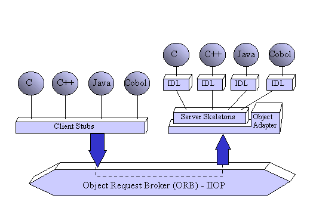
Figure 1: Corba IDL Language Bindings Provide Client/Server Interoperability
We can use the OMG IDL to specify the component’s attributes, the parent classes it inherits from, the exceptions it raises, the typed events it emits, and the methods its interface supports—including the input and output parameters and their data types. The IDL grammar is a subset of C++ with additional keywords to support distributed concepts; it also fully supports standard C++ preprocessing features and pragmas.
Notice that we have been using the terms " components " and " distributed objects " interchangeably. Corba distributed objects are, by definition, components because of the way they are packaged. In distributed object systems, the unit of work and distribution is a component. The Corba distributed object infrastructure makes it easier for components to be more autonomous, self-managing, and collaborative. This undertaking is much more ambitious than anything attempted by competing forms of middleware. Corba’s distributed object technology allows us to put together complex client/server information systems by simply assembling and extending components. We can modify objects without affecting the rest of the components in the rest of the system or how they interact. A client/server application becomes a collection of collaborating components. In addition, Corba is incorporating many elements of the JavaBeans component model, which should help make Corba components more " toolable ".
In the fall of 1990, the OMG first published the Object Management Architecture Guide (OMA Guide). It was revised in September 1992. The details of the Common Facilities were added in January 1995. Figure 2 shows the four main elements of the architecture:
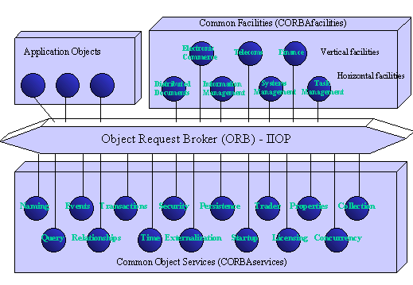
Figure 2: The OMG Object Management Architecture (OMA)
The Object Request Broker (ORB) is the object bus. It lets objects transparently make requests to—and receive responses from—other objects located locally or remotely. The client is not aware of the mechanisms used to communicate with, activate, or store the server objects. The Corba 1.1 specifications—introduced in 1991—only specified the IDL, language bindings, and APIs for interfacing to the ORB. So, we could write portable programs that could run on top of the dozens of Corba-compliant ORBs on the market (especially on the client side). Corba 2.0 specifies interoperability across vendor ORBs.
A Corba ORB provides a wide variety of distributed middleware services. The ORB lets objects discover each other at run time and invoke each other’s services. An ORB is much more sophisticated than alternative forms of client/server middleware—including traditional Remote Procedure Calls (RPCs), Message-Oriented Middleware (MOM), database stored procedures, and peer-to-peer services. In theory, Corba is the best client/server middleware ever defined. In practice, Corba is only as good as the products that implement it.
To give an idea of why Corba ORBs make such great client/server middleware, here is a " short " list of benefits that every Corba ORB provides:
It is very important to note that the client/server roles are only used to coordinate the interactions between two objects. Indeed, objects on the ORB can act as either client or server, depending on the occasion.
Figure 3 shows the client and server sides of a Corba ORB. The light areas are new to Corba 2.0. Even though there are many boxes, it is not as complicated as it appears to be. The key is to understand that Corba, like SQL, provides both static and dynamic interfaces to its services. The " Common " in Corba stands for this two-approaches combination, which makes a lot of sense because it gives us both static and dynamic APIs.
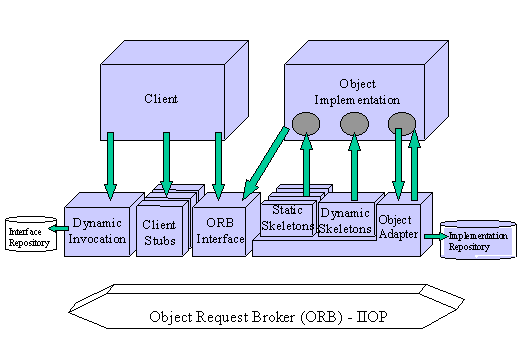
Figure 3: The Structure of a Corba 2.0 ORB
Let’s first go over what Corba does on the client side:
The support for both static and dynamic client/server invocations—as well as the Interface Repository—gives Corba a leg up over competing middleware. Static invocations are easier to program, faster, and self-documenting. Dynamic invocations provide maximum flexibility, but they are difficult to program; they are very useful for tools that discover services at run time.
The server side can not tell the difference between a static or dynamic invocation; they both have the same message semantics. In both cases, the ORB locates a server object adapter, transmits the parameters, and transfers control to the object implementation through the server IDL stub (or skeleton). Here is what Corba elements do on the server side of Figure 3:
This concludes our panoramic overview of the ORB components and their interfaces.
Corba 1.1 was only concerned with creating portable object applications; the implementation of the ORB core was left as an " exercise for the vendors. " The result was some level of component portability, but not inter-operability. Corba 2.0 added inter-operability by specifying a mandatory Internet Inter-ORB Protocol (IIOP). The IIOP is basically TCP/IP with some Corba-defined message exchanges that serve as a common backbone protocol. Every ORB that calls itself Corba-compliant must either implement IIOP natively or provide a half-bridge to it. Note that it is called a half-bridge because IIOP is the " standard " Corba backbone. So any proprietary ORB can connect with the universe of ORBs by translating requests to and from the IIOP backbone.
In addition to IIOP, Corba supports Environment-Specific Inter-ORB Protocols (ESIOPs) for " out-of-the-box " inter-operation over specific networks. Corba 2.0 specifies DCE as the first of many optional ESIOPs. The DCE ESIOP provides a robust environment for mission-critical ORBs.
We can use inter-ORB bridges and IIOP to create very flexible topologies via federations of ORBs. We can segment ORBs into domains based on administrative needs, vendor ORB implementations, network protocols, traffic loads, types of service, and security concerns. Policies on either side of the fence may conflict, so we can create firewalls around the backbone ORB via half-bridges. Corba 2.0 promotes diversity and gives us total mix-and-match flexibility, as long as we use IIOP for our global backbone.
CORBAservices are collections of system-level services packaged with IDL-specified interfaces. We can think of object services as augmenting and complementing the functionality of the ORB. We use them to create a component, name it, and introduce it into the environment. OMG has published standards for fifteen object services, and here are the most implemented ones:
All these services enrich a distributed component’s behavior and provide the robust environment in which it can safely live and play.
CORBAfacilities are collections of IDL-defined frameworks that provide services of direct use to application objects. Think of them as the next step up in the semantic hierarchy. The two categories of common facilities—horizontal and vertical—define rules of engagement that business component need to effectively collaborate.
The Common Facilities that are currently under construction include mobile agents, data interchange, workflow, firewalls, business object frameworks, and internationalization. Like the highway system, Common Facilities are an unending project. The work will continue until Corba defines IDL interfaces for every distributed service we know of today, as well as ones that are yet to be invented.
Corba seems to be perpetually under construction. It is now moving at bullet-train speeds just to keep up with the requirements of the Object Web. Corba must also maintain its headstart over DCOM—the ORB alternative from Microsoft. So there is no slowing down. In this section, we will look at the features that will most likely make it into Corba 3.0 (due in the end of 1998).
Corba 3.0 is the umbrella name for the next generation ORB technology. The ORB itself will be enhanced with several new features—including Messaging, Multiple Interfaces, Objects-by-Value, IIOP Proxy for firewall support, and Corba/DCOM Interoperability. The server side of Corba will be enhanced with a Portable Object Adapter (POA) that lets you write portable server applications. In addition, we expect to see a new Corba Persistence Service that supports automatic persistence. Many of these features have been under construction for several years now.
At a higher level, Corba will be augmented with a Common Facility for Mobile Agents, a JavaBeans-based Business Object Framework (BOF), and a Workflow Facility. At the domain level, we expect to see industry-specific frameworks for Manufacturing, Electronic Commerce, Transportation, Telecom, Healthcare, Finance, and the Internet.
This section presents competing technologies, that is, technologies developed to do what Corba does. In the domain of distributed objects, the competition comes from two directions: legacy Internet middleware—including Sockets, CGI/HTTP, and Servlets; and non-Corba ORBs—including JavaSoft’s RMI and Microsoft’s DCOM.
Sockets is the substrate technology for network programming. Until recently, Java Sockets was the only way we could write a client/server application in Java. Programming sockets with data streams is something we want to avoid, since it is extremely slow and its programming model is very primitive.
The CGI/HTTP protocol is clumsy, stateless, and extremely slow-much slower than Corba IIOP. Programming Internet client-server applications with CGI is a very poor choice. The bad news is that CGI is the premier three-tier client-server application model for the Internet today. The good news is that the leading Internet architects, well aware of CGI's shortcomings, are migrating to alternative technologies. Netscape will do its part by bundling a Corba ORB with every browser.
Servlets are Java server-side plug-ins. They provide a level of middleware abstaraction that is not much higher than sockets. Obviously, servlets fix some of CGI’s shortcomings, providing a simple component model for running Java classes from within a Web server. However, the servlet API is not the level of abstraction we would expect from a server-side component model.
First, RMI does not provide language-neutral messaging services. In other words, RMI objects can talk only to other RMI objects. With RMI, you cannot invoke objects written in other languages or vice versa. Second, RMI does not support dynamic invocations and interface repositories. Third, RMI does not provide a wire protocol for security and transactions. RMI is both proprietary and lightweight. It was not designed to interoperate with other ORBs or languages. Unlike Corba's IIOP, RMI is not a suitable backbone for the Internet or intranets; it lacks services IIOP provides.
A DCOM object is not an object in the object-oriented programming sense; a DCOM object does not have a persistent object reference that lets you reconnect to the same object at a later time. In other words, DCOM objects do not maintain state between connections. This can be a big problem in environments where you have faulty connections - for example, the Internet. The current implementation of DCOM does not support distributed naming services; it is based on the NT registry. Configuring DCOM and installing type libraries is tedious and labor-intensive. DCOM is also Windows-centric. Very few implementations of DCOM run on non-Windows platforms. Finally, for DCOM to scale on the server side, it requires the Microsoft Transaction Server (MTS). Microsoft has no immediate plans to port MTS to non-NT platforms.
The fundamental difference between DCE and Corba is that DCE was designed to support procedural programming, while Corba was designed to support object-oriented programming.
With an RPC, you call a specific function (the data is separate). In contrast, with an ORB, you call a method within a specific object. Different object classes may respond to the same method call differently. Because each object manages its own private instance data, the method is implemented on that specific instance data. ORB method invocations are precise. The call gets to a specific object that controls specific data and then implements the function in its own class-specific way. In contrast, RPC classes have no specificity: all the functions with the same name are implemented the same way.
Distributed procedural programming environments such as DCE support a different set of capabilities than those of the object-oriented programming model. The basic approach to distributing a procedural program is to:
This style of programming does encapsulate data and functions in servers, because the only way to access the data is through the server's RPC interface. It does not protect any of the data within a server from access by any of the functions in the server, however. Nor does it support abstraction, inheritance, polymorphism, or the dynamic style of programming described above.
Corba is a lot more than just an Object Request Broker (ORB)—it is also a very comprehensive distributed object platform. Corba extends the reach of the Java applications across networks, languages, component boundaries, and operating systems. Corba also supplements Java with a rich set of distributed services—for example, distributed introspection, dynamic discovery, transactions, relationships, security, and naming.
Of course, Java is much more than just another language with Corba bindings. Java is a mobile code system; it is a protable operating system for running objects. Java provides a simpler and newer way to develop, manage, and deploy the client/server applications. We can access the latest version of an application by simply clicking on the mouse. We can distribute an application to millions of clients by putting it on a Web server. Distribution is almost immediate. And, we do not have to concern ourselves with installation and updates. Java is also very good for servers. It allows to move services dynamically to where they are the most needed.
So what does all this do for Corba? Eventually, Java will allow the Corba objects to run on evrything from mainframes and network computers to cellular phones. Java simplifies code distribution in large Corba systems—its bytecodes let us ship object behavior around, which opens up exciting new possibilities for Corba agenting. Java seems to almost be the ideal language for writing the client and server Corba objects. Its built-in multithreading, garbage collection, and error management make it easier to write robust networked objects.
The bottom line is that these two object infrastructures complement each other well. Java starts where Corba leaves off. Corba deals with network transparency, while Java deals with implementation transparency. Corba provides the missing link between the Java portable application environment and the world of intergalactic objects.
In order to successfully share data and functionality and ensure data integrity across multiple sources, applications employing the distributed object computing model must coordinate the activities of multiple objects into transactions. To do so, they need a transaction-processing solution that reliably delivers business-critical functions, while ensuring transactional integrity and consistency.
Distributed-object architectures require a transaction-processing solution that not only delivers the features of traditional TP Monitors, but also meets the challenges of today’s heterogeneous computing environments. This solution must deliver the following:
Also, the Object Transaction Service (OTS) brings the powerful computing concept of Transaction Processing to the Corba world of distributed objects. By building on existing, well-established database and transaction standards, a new generation of open, mission-critical, enterprise-ready distributed applications is now possible. As a Corba Service, the OTS is an integral part of the OMG’s vision of truly reusable and reliable object-based software components.
The classical illustration of a transaction is that of funds transfer in a banking application (see Figure 4). This involves two operations: a debit of one account and a credit of another (after extracting an appropriate fee!). Combining these two operations into a single unit of work, the following are the required properties of the whole process:
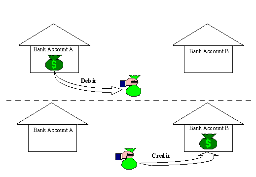
Figure 4: A typical transaction example
We have just described the so-called ACID properties of a transaction:
Thus a transaction is an operation on a system which takes it from one persistent, consistent state to another.
Consider the case where the two bank accounts reside in different applications, control threads, processes or machines: to perform ACID operations on the complete system, Distributed Transaction Processing (DTP) must be employed. This is a well understood mechanism which brings the transactional paradigm to updates on two or more independent data resources.
The DTP Reference Model has been defined by the X/Open Company Ltd., and it specifies programming language interfaces between three identified entities engaged in a DTP system: the Application (AP), the Resource Manager (RM), and the Transaction Manager (TM). The DTP Reference Model defines as well procedural interfaces between these entities: XA between TMs and RMs, and TX between the AP and the TM.
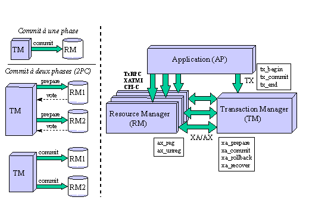
Figure 5: The X/Open Reference Model: DTP
The Transaction Manager is an external entity, which is required to provide the scaffolding to allow a transaction to span more than one application, process or machine. It does this by keeping track of the resources involved in the transaction, and coordinating transaction completion by contacting these resources individually on issue of a commit or rollback instruction from the transaction originator.
The application makes TX calls on the transaction manager to begin and complete global transactions, and makes transactional RPC (txRPC) calls on resource managers in the context of the transaction. The transaction manager and resource managers communicate via the XA interface. In particular, this interface implements a Two-Phase-Commit (2PC) protocol, facilitating atomic committal of global transactions.
The transaction manager uses this 2PC process to commit a transaction to the relevant resources: firstly all interested resources are asked to Prepare the transaction and return a Vote to indicate whether they are willing to make the changes durable. Based on the responses received from this phase, the transaction manager begins the second phase of completion: if all resources voted to commit, then they are asked to commit in turn; if one or more resources voted to rollback, then all are requested to rollback. In this way atomicity is largely assured.
Transactions are identified by an XID. This is a data structure which uniquely distinguishes the transaction in the system. Most functions in the reference model take an XID as a parameter, and transactional RPC calls "flow" the XID implicitly.
In a typical scenario, some component of the application makes a tx_begin call on the TM and the calling thread is associated with the transaction. Subsequent txRPC calls to resource managers carry knowledge of the transaction with them. Resource managers interested in transaction completion can be registered either statically or dynamically—that is, by the TM calling xa_start on the RM, or by the RM calling ax_reg on the TM. The TM takes care of generating an appropriate XID for the transaction. The two phase commit process is triggered by the application calling tx_commit on the TM, which coordinates completion by calling xa_prepare and xa_commit on each X/Open RM in turn.
An important point is that, with the exception of transactional RPC, these interfaces are defined at the programming language level only. That is, in the likely case that the entities communicating are distributed, the reference model does not indicate how the invocations should be propagated between address spaces. X/Open compliant TMs and RMs generally provide C libraries implementing these interfaces for linking with the relevant components, and use a variety of mechanisms to route, say, an xa_commit call to a DBMS server process.
The X/Open reference model is well established in industry. A number of third party Transaction Manager vendors support the TX interface, and most commercial database vendors provide an implementation of the XA interface. Prominent examples include BEA’s Tuxedo, Oracle, Informix, and Sybase’s Jaguar.
The Object Transaction Service is an OMG standard for a Corba transaction manager. The design is based on the X/Open reference model, with two related improvements:
Thus, the distributed transaction processing reference standard has been upgraded to an object-oriented model, promoting software component reuse, and inter-process communication mechanisms have been cleanly defined, facilitating a common standard for vendor interoperability.
As an improvement to the X/Open reference model, the OTS is fully compatible with X/Open compliant software—in particular, the OMG requires that the OTS be able to import and export transactions to and from XA compliant resource managers and TX compliant Transaction Managers, respectively.
The OMG is also the first vendor consortium to specify, as an optional part of the OTS, a more recent concept in transaction processing: Nested Transactions. These can insulate a global transaction from partial failure of some of its constituent operations and are particularly useful when combined with an object-oriented model and concurrent systems.
In this section, we give a very broad overview of how the OTS is involved in coordinating a distributed transaction in a typical case. Depicted above is a hypothetical situation where two applications, each with their own database, are distributed using an ORB. "Application" here could mean either two separate software products or different parts of the same one, in different processes or machines.
We suppose that application A wants to update its database and invoke application B which will cause, in turn , an update of B’s database. The OTS mediates between the applications, ensuring that the database updates are performed atomically. The OTS is shown here as separate from the applications—this is conceptual, because the OTS is indeed distributed between the applications. Thus calls that here seem to be between processes may in fact be local.
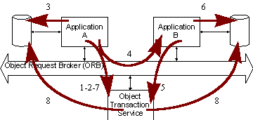
Below is an Interaction Diagram which summarizes the eight steps detailed above. Components of the system are represented by vertical lines, horizontal lines represent calls from one component to another.
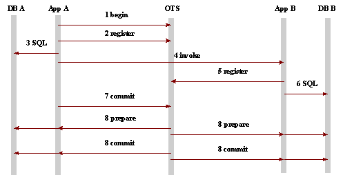
The following sections discuss the interfaces and functionalities involved in the above steps in more detail.
Figure 7 illustrates the IDL interfaces defined by the OTS specification, with an indication of the entities which use them. The Transaction originator is the component of the system which needs to begin and complete transactions, as well as invoke Recoverable servers—these are processes which contain objects whose state changes need to be managed atomically with distributed transactions. The text following briefly describes each interface in turn.
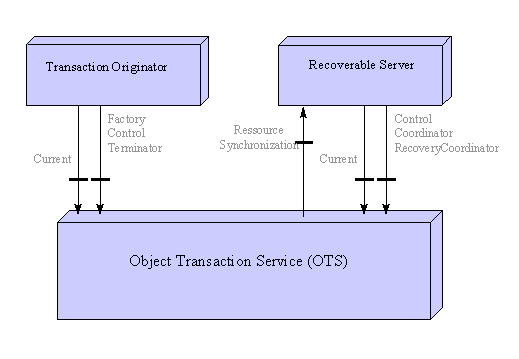
Figure 7: OTS Interface Summary
Current
This pseudo-interface allows a transaction client to begin and complete transactions. It also provides operations for suspending and resuming transactions, via which a thread can associate and disassociate itself from begun transactions. Use of the Current pseudo-object can be seen as an indirect way of accessing the "real" transactional interfaces, detailed below.
Control
Instances of this interface should be considered to represent the transaction. It is simply an encapsulation of two other objects which provide methods for transaction manipulation: a Coordinator and a Terminator. Two methods are supported which return references to these contained objects.
Coordinator
This interface provides a variety of methods for obtaining information about the transaction. It also exposes the rollback_only method, by which the transaction may be marked for rollback, but not actually rolled back. The main function of Coordinator is to allow a transactional object to register a Resource to be called back on transaction completion.
Terminator
The Terminator object associated with a transaction provides two methods to complete the transaction: commit and rollback.
Resource
The Resource interface is called by the OTS on transaction completion. It exposes methods supporting a two-phase commit protocol: prepare, commit, rollback and commit_one_phase.
TransactionalObject
This empty interface is used by the OTS to determine if the transaction context should be implicitly transferred to a remote object. If the remote object inherits from TransactionalObject then the OTS transparently "piggy-backs" the transaction information to be extracted by the OTS library at the other end.
TransactionFactory
This interface serves as a transaction (or, more specifically, Control) creation factory.
RecoveryCoordinator
A reference to a RecoveryCoordinator is returned to a transactional object when a Resource is registered with the Coordinator. The server should save this reference as it can be used to resolve transactions that are in doubt. After the transaction is prepared the server can call replay_completion on this object as a hint to the coordinator that commit or rollback have not been called yet.
Synchronisation
This callback object is implemented by the OTS user, and is registered with the Coordinator in exactly the same fashion as a Resource object. The OTS informs it of transaction completion, as for a Resource. However the methods it implements do not involve two phase commit; instead the two methods before_completion and after_completion are called before and after the two-phase commit process. Synchronization objects are intended for use with caching systems to inform them when to flush the cache to a more permanent store, and can drive the acquisition and release of locks.
The OTS provides two interfaces for transaction creation: the Current pseudo object, or the TransactionFactory object. Use of the Current interface is simpler, but it does require that the process be linked with an OTS library. Internally, the Current interface may call the TransactionFactory, but this is not necessarily the case. Because of this potential relationship, the OTS specification labels the use of TransactionFactory the direct method; the use of Current is deemed indirect. The same Current object can be used to manage different concurrent transactions, one per calling thread.
There is a significant difference between these two methods of transaction creation which becomes apparent when we discuss the two approaches to transaction propagation.
In step number 4 of the above example, the server object is invoked over the ORB. It was stated that because this object is OTS-aware (in Corba parlance, it is a transactional object), this invocation "carries with it knowledge of the transaction". There are two mechanisms available to transfer this Transaction Context to a remote server. These are called the explicit and implicit modes of Transaction Propagation.
Explicit propagation
This mode is the simplest to understand. The remote object’s IDL simply includes an in parameter of type Control in methods that involve transactional update. The Control associated with a transaction begun using Current can be obtained by calling get_control on Current. The server object then uses the passed object to register its interest in transaction completion.
Implicit propagation
This mode is intimately related to the indirect method of transaction creation. Using this mode, the transaction context associated with the Current pseudo object is "flowed" transparently to the server object. The server object must inherit from the empty OTS interface TransactionalObject—this acts as a flag to the OTS to indicate that the transactional information should be transported along with the invocation. The remote object can then use its instance of the Current interface to manipulate the passed transaction context.
The explicit mode requires that the interface designer knows which methods may need to be performed in the context of a transaction, and may have considerable repercussions if an existing interface is to be made transactional, as many methods may have to be changed to accommodate an extra parameter. On the other hand, the explicit interface allows individual methods to be made transactional, and has the advantage that neither the transaction receiver nor propagator need be linked with an OTS library.
The implicit mode does not change the signatures of existing methods, but it does require that all methods of a given interface be made transactional, and that the relevant processes be linked with an OTS library to implement the Current interface and the transaction "flowing" functionality. The implicit interface has another major advantage which becomes apparent when we discuss resource registration and XA interoperability.
The OTS coordinates a two phase commit with resources that are updated in the context of a transaction. Each of these resources must identify themselves to the OTS by registering a Resource object. It is this object which is subsequently called back on transaction completion. It implements the two-phase commit protocol via prepare and commit methods.
As with the above discussions, there are two mechanisms available for resource registration: manual and automatic. Automatic is only available when the durable store to be updated provides native OTS support, or an XA interface.
Manual Registration
In this case, the programmer must provide an implementation of Resource and register it with the Coordinator object contained in the Control object associated with the transaction. This Resource object must remain available until transaction completion. The registration call is usually made while the server is processing the first request for a given transaction. Typically the resource object lives in the same address space as the transactional object invoked, but this is not necessarily the case. The Resource implementation must, of course, be aware of what commitment of the transaction means—i.e. it must keep track of what needs to be saved when the commit call arrives.
An important point here is the "interception" of requests to TransactionalObjects by the OTS. Because the transaction context is propagated implicitly, the OTS must be called prior to the implementation object in order to set up the required structures in the Current interface.
Automatic Registration: XA interoperability
The OTS can work with a database’s XA interface, where available, to directly coordinate 2PC without requiring a user-implemented Resource object. In this case the programmer registers the XA interface with the OTS before any requests are received, and the OTS takes care of registering a resource object whenever a transactional invocation arrives. This Resource implementation is a thin layer on the XA interface provided by the database vendor, and XID’s are automatically generated and maintained by the OTS.
This fragment shows how a database XA interface can be statically registered with the OTS. This effectively gives the OTS a handle on the XA interface of the database that may be updated in the context of a transactional invocation. The interaction diagram for a server using the automatic registration scheme looks as follows:
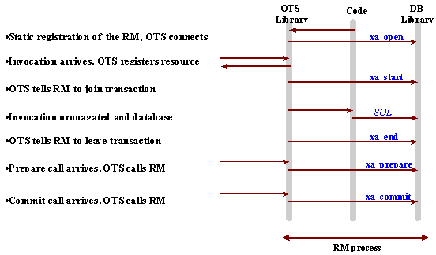
The automatic methods do rely on native OTS support or an XA interface—if the programmer is using, for example, the file system for durability, this will not be available (and not all databases expose an XA interface, either). Another disadvantage of the automatic method using XA is that it uses the static registration concept of X/Open—thus all databases that could be updated in a transactional invocation have to be pre-registered. The OTS will register a resource for each when a transactional invocation arrives—even though only one of them may be actually updated. The extra overhead involved in calling XA on the unchanged databases may be significant.
There are two ways for the transaction to be terminated—either indirectly, using the Current interface, or directly, using the Terminator interface. Of course there are also two types of completion: commit and rollback, both possible via either interface.
It should be noted that where a transaction is propagated implicitly, a remote server may not import permission to actually terminate the transaction. The OTS specification makes it clear that it is up to OTS implementers to decide whether it is acceptable to propagate the Terminator object reference. This is because it is considered bad practice to allow something other than the transaction originator to commit the transaction.
A remote server object may however mark the transaction for rollback by calling rollback_only on Current (indirect) or on Coordinator (direct). This does not actually rollback the transaction, but it ensures that when the originator calls commit, the only possible outcome is a rollback.
Another completion wrinkle: if there is only one registered Resource, then a two-phase commit is not required. In this case commit_one_phase can be called on the Resource concerned.
By now, you will have realized that there are two different philosophical approaches that can be adopted in using the OTS—these we can call the "all in" service and the "DIY—do it yourself" approach. The former is associated with indirect context management, implicit propagation and automatic (XA) registration; the latter is direct, explicit and manual. There are, of course, a number of ways of switching from one approach to another, or mixing and matching various aspects of each approach. The following table contrasts the two approaches.
|
All in |
Do It Yourself |
|
Needs the XA interface or native database support |
Does not use XA or rely on database support |
|
Needs a linked OTS library |
Doesn’t require an OTS library |
|
No recovery semantics required |
Recovery semantics required |
|
Easy to upgrade an interface—simply inherit from TransactionalObject |
Not so easy—each operation needs to be changed |
|
May lead to more resources than required (particularly in the XA case) |
Tunable and flexible resource registration |
All the above examples show how the OTS handles successful atomic commit and rollback of distributed transactions. What happens in the event of process failure, machine failure or network failure? The answer depends largely on what goes wrong and at which point in the transaction. A vast array of scenarios present themselves—originator failure, resource failure, coordinator failure, multiple component failure—we will concentrate on a few general points.
The first thing to state is that the OTS, like the X/Open Reference Model, uses a presumed abort model—that is, involved components only log a decision to commit. As long as the two phase commit process has not begun, this is sufficient to ensure atomicity.
If two phase commit has begun, but is not complete, difficult situations can arise:
OTS transactions have a finite (and configurable) timeout. If the transaction is not completed within this time, it is automatically rolled back. In addition, most XA interfaces implement a timeout, so that those transactional objects which use XA resource managers may have their work automatically rolled back if the transaction is not completed in a timely manner.
The OTS specification defines interoperability interfaces between the ORB and the OTS which enable transactions to be imported and exported between OTS implementations. Combining this with an IIOP ORB means a wide variety of inter-ORB, inter-OTS distributed transactions are possible.
In addition, the OTS specification required that an OTS implementation be able to import and export transactions from/to any X/Open compliant transaction manager and resource managers.
The explosion of the Internet has fueled the shift to distributed objects. Internet business opportunities require a new breed of solutions that are suited to this new, rapidly expanding forum. A rapidly growing number of organizations are deploying Internet-based services that require an initial, modest investment, yet enable the organization to recover that investment nearly overnight with the low-overhead, high-volume sales that they can generate. The prolific development of these Internet-based applications reinforces the need for a standards-based distributed-object architecture, which enables functionality and data to be shared across applications and over multiple platforms.
In this chapter, we will see two typical legacy systems, namely databases and TP Monitors, that have been addressing for decades the need for a transactional access to the data. Then, we will see how new technology can integrate with these legacy systems.
In a database-centric client/server architecture, a client application usually requests data and data-related services (such as sorting and filtering) from a database server. The database server, also known as the SQL engine, responds to the client’s requests and provides secured access to shared data. A client application can, with a single SQL statement, retrieve and modify a set of server database records. The SQL database engine can filter the query result sets, resulting in considerable data communication savings.
An SQL server manages the control and execution of SQL commands. It provides the logical and physical views of the data and generates optimized access plans for executing the SQL commands. In addition, most database servers provide server administration features and utilities that help manage the data. A database server also maintains dynamic catalog tables that contain information about the SQL objects housed within it.
Because an SQL server allows multiple applications to access the same database at the same time, it must provide an environment that protects the database against a variety of possible internal and external threats. The server manages the recovery, concurrency, security, and consistency aspects of a database. This includes controlling the execution of a transaction and undoing its effects if it fails. This also includes obtaining and releasing locks during the course of executing a transaction and protecting database objects from unauthorized access.
So what is an SQL server? It’s a strange mix of standard SQL and vendor-specific extensions. The leading database-only vendors—including Oracle, Sybase, and Informix—have a vested interest in extending their database engines to perform server functions that go far beyond relational data model. The more diversified system software vendors—including IBM, Digital, Tandem, and Microsoft—are inclined to stick with SQL standards and off-load the non-standard procedural extensions to Network Operating Systems (NOSs, like DCE), TP Monitors, Object Databases, and ORBs.
An OTS-enhanced ORB can easily integrate with a DBMS, in such a way that all of the applications within the scope of the ORB will be able to get a complete access to the database from within their transactions. This is achieved thanks to the XA implementation provided by the database vendors, as explained in the last chapter (see the section 5.3.4). Typically, we would like to hide all of the XA implementation details by wrapping them in Corba objects, which would then present clean interfaces to the rest of the world.
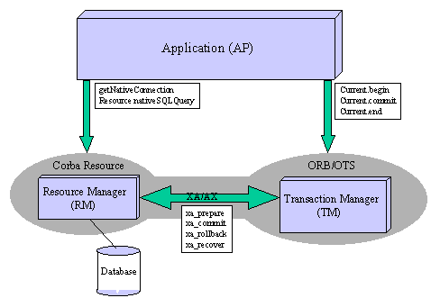
Figure 8: Corba Wrappers around Database XA implementation
In Figure 8 (which should be compared to Figure 5), we see that after getting a native connection handler on the database from a dedicated OTS object, the client application can begin a transaction. Then, the OTS registers the corresponding resource manager, and gets ready to issue XA invocations. These XA invocations are kept hidden from the application, which only sees Corba objects and invoke Corba methods. The application can then invoke methods on the Corba object wrapping the resource manager, those methods corresponding to the SQL updates it wants to perform. The OTS then takes in charge the commit process and ends the transaction when asked by the application to do so.
It should be noted, however, that database vendors do not consider implementing XA as their highest priority. Therefore, we must always wait between the release of a new database version and the corresponding XA implementation. Also, performance is not as good as it is with internal database transaction handling. However, XA remains the only way to coordinate accesses on distributed databases in global transactions, and integrates fairly well with new technology like OTS. In the next chapter, we will see an actual project involving this integration.
As a growing number of sophisticated services are provided over the Internet, the need arises to coordinate application objects into transactions. Web-based applications typically require flexible access to multiple data sources—such as inventory, customer, or shipping data—while maintaining data integrity across these data sources to ensure a consistent state. Such applications create the need for a software solution that coordinates their activities, ensuring consistency, isolation, and durability.
To achieve this, Web-based applications require an object-based transaction service that enables the following:
Currently, these objectives are addressed with the so-called Object Transaction Monitors (OTMs), which are basically Corba-based TP Monitors. Long before the advent of the object-oriented technologies, TP Monitors addressed the needs for robust, reliable, transactional and efficient middleware. However, these legacy systems now become obsolete, because of their static and monolithic architecture, and should therefore be gradually replaced by OTMs, which become more and more mature. But, this upgrade process may take several years, and OTMs should therefore interface well with TP Monitors. Also, let us first see what TP Monitors exactly are.
TP Monitors first appeared on mainframes to provide robust run-time environments that could support large-scale OLTP (On-Line Transaction Processing) applications—airline and hotel reservations, banking, automatic teller machines, credit authorization systems, and stock-brokerage systems. Since then, OLTP has spread to almost every type of business application—including hospitals, manufacturing, point-of-sales retail systems, automated gas pumps, and telephone directory services. TP Monitors provide whatever services are required to keep these OLTP applications running in the style they are accustomed to: highly reactive, available, and well-managed. With OLTP moving to client/server platforms, a new breed of TP Monitors is emerging to help make the new environment hospitable to mission-critical applications.
Although there is no commonly accepted definition of a TP Monitor, we can think of it as " an Operating System (OS) for transaction processing ". This definition captures the essence of a TP Monitor. So what does an operating system for transaction processing do in life? How does it interface with the rest of the world? What services does it provide? In a nutshell, a TP Monitor does two things extremely well:
TP Monitors were originally introduced to run classes of applications that could service hundreds and sometimes thousands of clients (think of an airline reservation application). If each of these thousands of clients were given all the resources it needed on a server—typically a communication connection, half a MegaByte of memory, one or two processes, and a dozen open file handles—even the largest mainframe server would fall on its knees (see Figure 9). Luckily, not all the clients require service at the same time. However, when they do require it, they want their service immediately. Humans, on the other end, have a " tolerance for waiting " of two seconds or less. TP Monitors provide an operating system—on top of existing OSs—that connects in real time these thousands of impatient humans with a pool of shared server processes.
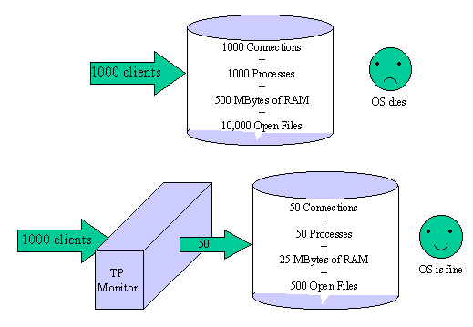
Figure 9: Why a Server OS Needs a TP Monitor
The " funneling act " is part of what a TP Monitor must do to manage the server side of a user-written OLTP application. The server side of the OLTP application is typically packaged as a dynamic library that contains a number of related functions. The TP Monitor assigns the execution of the dynamic library functions to server classes, which are pools of pre-started application processes or threads, waiting for work. Each process or thread in a server class is capable of doing the work. The TP Monitor balances the workload between them. Each application can have one or more server classes (Note that these are not classes in the object-oriented sense of the word).
When a client needs a service request, the TP Monitor hands it to an available process in the server class pool. The server process dynamically links to the DLL function called by the client, invokes it, oversees its execution, and returns the results to the client. After that completes, the server process can be reused by another client. The operating system keeps the already loaded dynamic libraries in memory, where they can be shared across processes.
In essence, the TP Monitor removes the process-per-client requirement by funneling incoming client requests to shared server processes. If the number of incoming client requests exceeds the number of processes in a server class, the TP Monitor may dynamically start new ones—this is called load-balancing. The more sophisticated TP Monitors can distribute the process load across multiple CPUs in SMP or MPP environments. Part of the load-balancing act involves managing the priorities of the incoming requests. The TP Monitor does that by running some high-priority server classes and dynamically assigning them to the VIP clients.
Typically, short-running and high-priority functions are packaged in high-priority server classes. Batch and low-priority functions are assigned to low-priority server classes. We can also partition server classes by application type, desire response time, the resource they manage, fault-tolerance requirements, and client/server interaction modes—including queued, conversational, or RPC. In addition to providing dynamic load-balancing, most TP Monitors let us manually control how many processes or threads are available to each process class.
The transaction discipline was introduced in the early TP Monitors to ensure the robustness of multi-user applications that ran on the servers. These applications had to be bullet-proof and highly reliable if they were going to serve thousands of users in mission-critical situations. TP Monitors were developed from the ground up as operating systems for transactions. The unit of management, execution, and recovery was the ordinary transaction and the programs that invoked them. The job of a TP Monitor is to guarantee the ACID properties while maintaining high transaction throughput. To do that, it must manage the execution, distribution, and synchronization of transaction workloads.
With TP Monitors, the application programmers do not have to concern themselves with issues like concurrency, failures, broken connections, load-balancing, and the synchronization of resources across multiple nodes. All this is made transparent to them—very much like an operating system makes the hardware transparent to ordinary programs. Simply put, TP Monitors provide the run-time engines for running transactions—they do that on top of ordinary hardware and operating systems. They also provide a framework for running server applications.
Currently on the market, there is a confusing landscape of solutions that handle transactions in a distributed environment. Some of these approaches use existing technology in an attempt to solve modern problems. Other solutions use new technology and are a better fit for the emerging world of distributed applications. This section outlines the different approaches, and addresses their strengths and weaknesses.
Several vendors offer a TP Monitor approach to handling transactions in a distributed environment. In this fixed architecture, there is a complex monolithic application that handles transaction coordination using a built-in Transaction Manager component.
Figure 10: TP Monitor Approach
The advantages to the TP Monitor approach are:
The drawbacks of the TP Monitor approach are:
Examples of TP Monitor approaches are IBMs’ CICS and IMS, and BEA’s Tuxedo.
In an effort to rapidly bridge the gap between legacy systems and Corba applications, other vendors have offered a solution comprised of an ORB plus a TP Monitor. In this hybrid model, an ORB interface to a monolithic TP Monitor is provided.
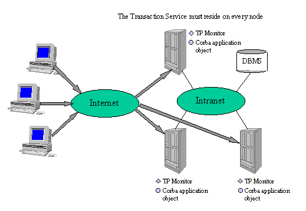
Figure 11: ORB Interfacing to a TP Monitor
The advantages to the ORB plus TP Monitor approach are:
The drawbacks of the ORB plus TP Monitor approach are:
An example of the ORB plus TP Monitor approach is BEA’s Iceberg/OTM (based on Tuxedo).
Built specifically to meet the needs of the new application paradigm, a fully integrated Corba solution offers a fully compliant Corba Transaction Service tightly integrated with the underlying ORB. With this solution, the transaction service takes advantage of the power of the ORB to perform multithreading and handle connections.
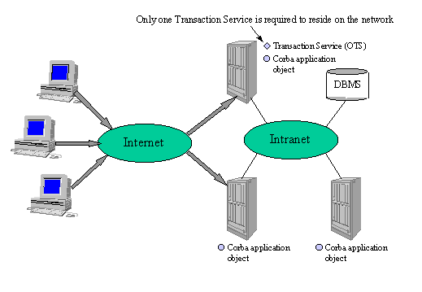
Figure 12: Integrated Corba Solution
The advantages to the integrated ORB and Transaction Service approach are:
The drawbacks of the integrated ORB and Transaction Service approach are:
An example of this solution on the market today are Inprise’s VisiBroker Integrated Transaction Service (VisiBroker ITS) and Iona’s OrbixOTM.
Note that an integrated ORB and transaction service can interface relatively well with a TP Monitor. Specific gateways wrap the TP Monitor transaction managers into Corba OTS Resource objects, and thus let any client invoke TP Monitor services as if they were Corba methods. Therefore, we can gradually implement new, object-oriented technology, while in the meantime maintaining some older TP Monitors services. This way, the upgrade presents fewer risks, and can be carried on at our own pace.
An example of such a gateway is Insession’s TransFuse, bundled with VisiBroker ITS.
The Cotransit project is intended to test an implementation of the OTS, namely the ITS (Integrated Transaction Service) software, sold by Inprise (formerly known as Visigenic/Borland). This software is currently undergoing a beta test process, which Sema Group Telecom participates in, and this paper exposes the benchmark which we conducted in order to test this product.
Cotransit let us check that ITS correctly processes transactions distributed on different databases, dispatched on different hosts. It is based on an architecture convenient to model the migrating process of data from one system to another. With ITS, we can buy the Insession’s TransFuse product, allowing us to integrate in this framework legacy applications based on TP Monitors such as Tuxedo, CICS, IMS and MQ Series. Therefore, this architecture can be used to test the migrating of legacy applications to the world of distributed objects. The following figure shows the architecture we set up for Cotransit.
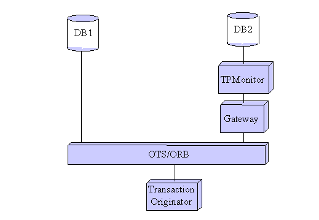
Figure 13: Cotransit basic architecture
First, we set up a benchmark, not involving TransFuse and Tuxedo, in order to beta test ITS, and to check that this product can effectively be integrated in our future projects. The benchmark is made of two distinct parts: the part involving the business objects, and the one providing the actual benchmark process. It is a prototype to simulate several client applications that would transfer money from one bank account to another, all the bank related information being distributed among different databases stored in different places. Almost all objects are written in Java. C/C++ is only used to write the database proxy object.
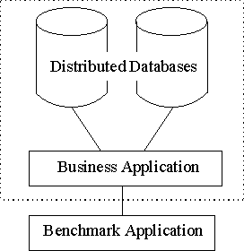
Figure 14: The Cotransit benchmark architecture
In the following sections, we will see in more details these two parts and how they fit together.
The business part models a bank application, where a client process transfers a given amount of money from one account to another. There are two databases, Oracle 7.3.4 on NT 4.0 providing the tables TELLER and BRANCH, and Oracle 7.3.4 on Solaris 2.5.1 providing the tables ACCOUNT and HISTORY (log report table). The table names are self-describing.
The client process is run by the DCTransaction (DC stands for Debit-Credit) object, which binds to the Bank Corba interface. Thanks to this Bank object, the DCTransaction client gets Log, Account, Branch and Teller objects, which all serves as proxies for the corresponding Storage instances. The two Storage objects are proxies for the corresponding databases.
All this should seem clearer with the following figure, where the simple boxes show the different Corba objects, whose IDL interfaces are exposed in the accordingly named big boxes. Note that for clarity reasons only the parameter names are shown in the operation signatures, not their types.
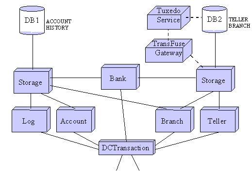
Figure 15: Business Application
Distributed transactions are being made possible thanks to the DTP (Distributed Transaction Processing) model of the X/Open company, materialized by the implementation of the standard XA interface. Oracle implements this XA interface, but allows access to it only through the OCI (Oracle Call Interface, an implementation of the CLI (Call Level Interface) standard. The pending of OCI for Java is JDBC, but Oracle (and Sybase) does not yet provide us with an implementation of XA within JDBC. Therefore, the calls to the database must take the form of OCI, and hence the code for the caller object can not be written in Java. Here, the Storage object is written in C/C++.
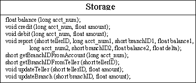
The Storage object is a proxy to the Oracle database, defined by storage_ora.cpp and storage_ora.h. It is a persistent Corba object launched by the storage server, defined by storage_ora_main.cpp. Each operation it implements is made of OCI calls that, within a transaction, get a connection handler to the database, execute a SQL request, parse its result, and finally commit or rollback the transaction. To have more information on the OCI syntax, you may have a look at the Oracle documentation (and in particular, the Programmer’s Guide to the Oracle Call Interface, Release 7.3, Chapter 4).
The Bank object provides the client with the four business objects it will need to perform its requests, namely Account, Branch, Teller and Log. Here, Bank (defined by BankImpl.java) is kept simple. When launched by its server (defined by BankServer.java), it gets the two Storage instances corresponding to the two databases. Then, when the client asks for it, it launches one of the four aforementioned business objects, give it the needed reference to one of the two Storage instances, and hands the newly launched business object reference back to the client.
The Bank instance is persistent (its name is hard coded to be " GreatBank "), and it is the main interlocutor of the client object. If needed, it could easily implement a security access control policy, or whatever other procedures in order to hand back to the client the appropriate business object references.
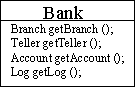
The Bank interface is made of four operations, getBranch(), getTeller(), getAccount() and getLog(), which return the references to the corresponding business objects. Each time one of these operations is invoked, a new transient business object is created, and the reference handed out to the invoking client. Another possibility would have been to make these four business objects persistent and unique, but it is not the purpose of this project to study this kind of things. It should be noted that, however, since DCTransaction is persistent, there should be only one instance of the client, and therefore only one instance of each of the four other business objects.
These four business objects are transient, and their references are given to the client thanks to the Bank instance. They really are proxies to the corresponding Storage instances. Here, the implementation is trivial, since there is a one-to-one mapping between the methods they implement and the calls they make to the corresponding Storage instances. But these objects are needed because the client must not have a direct access to the storage mechanism. In a more actual model, we would have for example consistency validation procedures, or also security control policies enforced by these business objects.
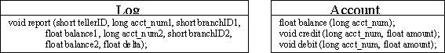
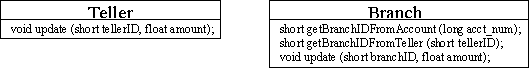
Log and Account keep a reference to the Storage object proxying the first database (in which the two tables ACCOUNT and HISTORY are stored), and Branch and Teller keep a reference to the Storage instance proxying the second database (in which the two tables TELLER and BRANCH are stored). Note that Branch also keeps a reference to the first Storage object, because it must be able to access both the ACCOUNT and BRANCH tables (to be able to retrieve a branch ID related to a given account).
DCTransaction is the client process which processes the money transfer order. For that purpose, it implements the debitCreditTransaction() method, that debits of a given amount an account of the ACCOUNT table (proxied by the first Storage object), credits another account of the same table with the same amount, updates accordingly the balance entries of the BRANCH and TELLER tables (proxied by the second Storage object), and eventually logs the transaction in the HISTORY table (proxied by the first Storage object).
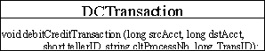
DCTransaction is a persistent Corba object implemented by DCTransactionImpl.java and launched by DCTransactionServer.java. This object has been done Corba, just in order for the benchmark objects to be able to access it. We can also make transactions on the business objects, without launching the DCTransaction Corba object, simply by executing the Transac.java program with the correct parameters. For example, running:
"vbj -DORBservices=com.visigenic.services.CosTransactions Transac GreatBank 5 6 100" will debit account #5 and credit account #6 with 100$ in one global transaction.
The DCTransaction object is the so-called application server: as we will see in the next chapter, it is used as an entry gate to the business part.
This part is made of three functionalities, namely the client processes, the coordinator object and the application server (the DCTransaction object that we have just seen above), as shown by the following figure. The purpose of this benchmark is to run multiple client instances, each requesting a money transfer order, in order to simulate several concurrent transactions originating from multiple teller machines across a bank network.
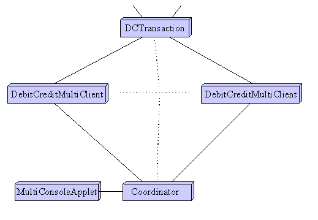
Figure 16: Benchmark architecture
Each DebitCreditMultiClient (Debit-Credit client simulator) registers its callback IDL interface with the Coordinator so that we can control it remotely. The dotted lines represent the fact that we can start as many of these clients as we want. Then, each client invokes the debitCreditTransaction() method on the DCTransaction object, which is here the application server. The detailed boxes describe the IDL interfaces implements by all those objects.
This process first starts a control thread, which implements the ClientControl IDL interface and is therefore a callback thread. This control thread is registered with the Coordinator so that it can be controlled remotely.
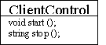
DebitCreditMultiClient presents two buttons in its GUI. When the user clicks on the Run button, the process starts a new thread, which invokes repeatedly the debitCreditTransaction() on the DCTransaction object till the user clicks on the Stop button. Alternatively, this looping thread can be started and stopped by the Coordinator, thanks to the ClientControl interface and the control thread (callback). In this latter case, the user does not intervene directly on the DebitCreditMultiClient GUI.
A timer measures the time needed to execute a transaction, and statistics are computed when the stop() method is invoked, so that we know the average execution time for one transaction. This gives a quantitative result to the benchmark.
The Coordinator allows to control remote clients, making them begin and then stop their own series of transaction requests. It is a Corba persistent object with which these clients register, and on which the MultiConsoleApplet invokes the beginning and the end of the benchmark. When the applet invokes the start() method, the Coordinator invokes the corresponding start() method on each of its registered clients; the same process occurs with the stop() method, which also collects the statistics and compute the average time to process one transaction.
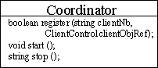
The register() method is used by the clients to register with the Coordinator, and they pass along an object reference to their callback thread.
This applet is fairly simple. It displays two buttons: start an stop. When the user clicks on the Start button, it invokes the start() method on the Coordinator, which in turn invokes the start() method on each of its registered clients, thus starting the benchmark. When the user clicks on the Stop button, the Coordinator stops each running client, aggregates the statistics about the transaction processing time, and the applet displays it.
In response to growing demands for faster and more cost-effective application development, IT organizations are turning to the distributed object computing model, which enables the re-use of business processing functionality. By re-using software components, developers can assemble new applications rather than build them from the ground up. The explosion of the Internet has also fueled this shift to distributed object computing, which provides a software architecture that is ideal for robust Web-based applications. However, the opportunities presented by Web-based computing bring with them new concerns for interoperability, security, scalability, data integrity and access to multiple data sources. Furthermore, object-oriented business applications require sophisticated transaction management capabilities in order to ensure transactional integrity. Integrated OTS/ORBs give us a good solution to meet all of these requirements. Their integrated architectures provide a flexible framework for developing and deploying transactional applications in an open, distributed environment.
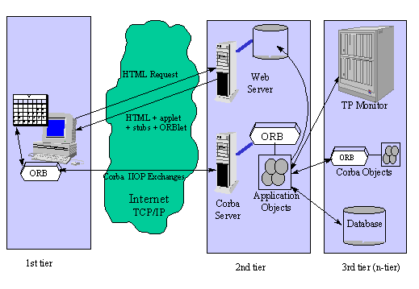
Figure 17: Corba OTS Nirvana
Business objects are self-describing and self-managing blobs of intelligence that we can move around and execute where it makes the most sense. Also, Figure 17 shows the Nirvana enabled by a Corba/OTS-based architecture. Here, companies can bring to the Web all their legacy systems, ranging from object applications to TP Monitor services, and share securely their data. Web server bottlenecks are evicted, and this architecture should prove to be particularly flexible, scalable, and secure. However, all this needs industry-proof testing until it becomes really mature, which should happen in the very few months to come. Stay tune!
Object-oriented methodologies:
Software patterns:
Client/Server computing:
Corba: